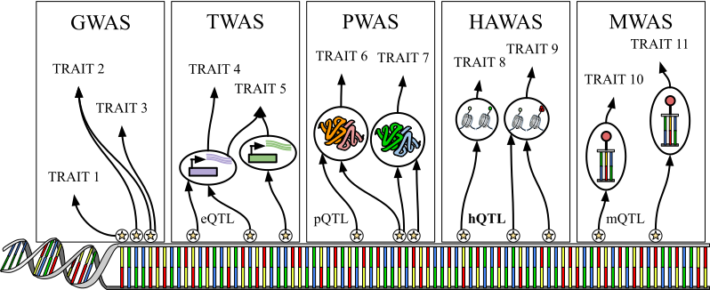

Subirana-Granés M, Hoffman J, Zhang H, Nandi S, Akirtava C, Fotso K, Pividori M. Genetic studies through the lens of gene networks. 2025. Annu. Rev. Biomed. Data Sci. 8. https://doi.org/10.1146/annurev-biodatasci-103123-095355
Marc Subirana-Granés 0000-0003-3934-839X
· msubirana
· msubirana20
Department of Biomedical Informatics, University of Colorado Anschutz Medical Campus, Aurora, CO, USA
Jill Hoffman 0000-0002-2690-2593
· jillhoffman
Department of Biomedical Informatics, University of Colorado Anschutz Medical Campus, Aurora, CO, USA
Haoyu Zhang 0009-0005-6025-0217
· haoyu-zc
Department of Biomedical Informatics, University of Colorado Anschutz Medical Campus, Aurora, CO, USA
Sutanu Nandi 0009-0001-5887-999X
· snandi-DS
Department of Pharmacology, University of Colorado Anschutz Medical Campus, Aurora, CO, USA
Christina Akirtava 0000-0001-7587-2303
· bio2data
· bio2data
Department of Biochemistry and Molecular Genetics, RNA Bioscience Initiative, University of Colorado Anschutz Medical Campus, Aurora, CO, USA
Kevin Fotso XXX
Office of Information Technology, University of Colorado Anschutz Medical Campus, Aurora, CO, USA
Milton Pividori✉ 0000-0002-3035-4403
· miltondp
· miltondp
· @miltondp@genomic.social
Department of Biomedical Informatics, University of Colorado School of Medicine, Aurora, CO 80045, USA; Colorado Center for Personalized Medicine, University of Colorado Anschutz Medical Campus, Aurora, CO, USA
· Funded by The National Human Genome Research Institute (K99/R00 HG011898); The Eunice Kennedy Shriver National Institute of Child Health and Human Development (R01 HD109765)
✉ — Correspondence possible via GitHub Issues
or email to
Milton Pividori <milton.pividori@cuanschutz.edu>.
Abstract
This is a very cool paper about something.
We are doing this and that.
And this are the conclusions.
And this is in boldface.
Introduction
Understanding the genetics of complex traits remains a formidable challenge, primarily addressed through Genome-Wide Association Studies (GWAS) that identify variant-trait associations without providing a mechanistic understanding of how these variants influence phenotypes.
A significant limitation of GWAS is that most associated variants reside in non-coding regions of the genome, underscoring the critical role of gene regulation in generating diverse phenotypes from identical DNA sequences.
To bridge this gap, Transcriptome-Wide Association Studies (TWAS) have been developed to link genetic variants to gene expression (eQTLs) or alternative splicing (sQTLs) and subsequently to specific traits or phenotypes.
However, TWAS and similar approaches typically focus on single variants or individual genes, thereby overlooking the intricate gene-gene interactions that are pivotal according to modern theories such as the omnigenic model of genetic architecture for complex traits.
Capturing these interactions necessitates more sophisticated methodologies.
Traditional approaches involve pathways or gene sets, which rely on predefined groups of functionally related genes but are constrained by existing knowledge.
Alternatively, QTL analyses like trans-eQTLs and sQTLs explore distal genetic relationships and splicing variations, respectively.
Another promising avenue is the construction of gene regulatory networks based on co-expression patterns, introducing the concept of gene modules.
These gene modules are often identified using unsupervised learning techniques applied to diverse and heterogeneous datasets, enabling the modeling of both linear and nonlinear relationships within the data.
Such methods transcend basic differential expression analyses by capturing higher-order connections between genes.
Tools like MAGMA and the more recent PhenoPLIER exemplify this integrative approach by combining variant-trait associations from GWAS or variant-gene expression-trait associations from TWAS with groups of functionally related genes, thereby enhancing the reliability of gene modules by mitigating false positives through additional layers of evidence.
Furthermore, these gene modules can be refined using quantitative omnigenic models that incorporate transcription factors (TFs) to better elucidate gene-gene interactions and potentially include aspects of alternative splicing.
Ongoing research continues to explore and develop novel methods that more effectively link expression patterns with genetic variation, aiming to provide a more comprehensive mechanistic understanding of the genetic basis of complex traits.
Single-variant / single-gene approaches

Figure 1:Major approaches based on single-variant/single-gene strategies to understand the genetic basis of complex traits.
From left to right GWAS, TWAS, PWAS, HAWAS and MWAS.
Understanding the genetic underpinnings of complex traits and diseases has been a pivotal pursuit in the field of human genetics.
Early endeavors predominantly utilized genome-wide association studies (GWAS), which have been instrumental in identifying a foundational map of genomic regions linked to traits, offering valuable insights into the heritable components of complex diseases.
Building upon GWAS findings, efforts have been made to link these associated variants to specific genes, operating under the premise that variation in a single gene can elucidate disease-relevant biology.
Techniques such as Transcriptome-Wide Association Studies (TWAS) have emerged, integrating GWAS data with gene expression profiles to pinpoint genes whose expression levels correlate with phenotypic variation.
These approaches have advanced our understanding by moving from variant-level associations to functional gene-level insights.
From genetic variants to traits: genome-wide association study (GWAS)
In a simple trait, a single gene can be responsible for the disease, for example in the case of Sickle Cell Anemia and Huntington’s disease.
However, most traits are not so simplistic and are the result of many mutations across the genome.
Even these monogenic traits are impacted by the polygenic background [1].
Genome-wide association studies (GWAS) examine the relationship between genetic variants and specific phenotypes by comparing allele frequencies in individuals of similar ancestry with distinct phenotypic traits (Figure 1).
The statistical associations are typically assessed using linear regression for continuous traits and logistic regression for binary traits.
It is crucial to control for covariates such as age, sex, population structure, and ancestry to minimize confounding effects [2,3].
As many variants are found to be significant and due to the phenomena of linkage disequilibrium between causal and non-causal variants, the results of GWAS are often grouped into risk loci.
These loci represent clusters of variants that demonstrate significant associations, although not every variant may be causal.
Since the first GWAS or age-related macular degeneration (AMD) in 2005, the GWAS catalog rapidly expanded, containing ~400,000 curated SNP-trait associations from >45,000 published GWAS across >5,000 human traits [4].
These studies have successfully identified risk loci for a variety of traits and diseases such as type 2 diabetes, auto-immune disease, schizophrenia, major depressive disorder, and more [5,6].
As GWAS participants increase, more loci are able to be identified.
For example, a study investigating insomnia with a sample size of >1M identified 202 risk loci [7], compared to earlier studies with a sample size of ~110,00, which were only able to identify 3 risk loci [8].
The increased sample sizes allows for identification of more common variants as well as rare and low-frequency variants [5].
Beyond the identification of risk loci, GWAS has also led to the discovery of novel biological mechanisms.
In Crohn’s disease, a novel SNP was identified through GWAS in the gene ATG16L1 (rs2241880) [9].
This SNP causes a missense mutation that enhances caspase-3-mediated cleavage of ATG16L1 and diminished autophagy.
As a result, intracellular bacterial clearance is impaired causing a chronic inflammatory state [10].
A potential clinical application of GWAS involves quantifying a patient’s risk for a specific disease based on relevant SNPs represented by a polygenic risk score (PRS) [11].
PRS’s can eventually be combined with current risk prediction models that include clinical, biochemical, and lifestyle features.
However, due to the majority of GWAS participants being from European ancestry, PRS has shown to not be generalizable to other groups.
Although GWAS have identified numerous genetic variants associated with complex traits, translating these findings into biological insights remains challenging [5].
Many significant GWAS variants are located in non-coding regions, making it difficult to identify the specific genes that drive trait associations [12].
A simple strategy to link GWAS-associated variants with a gene is by physical proximity, which typically selects the closest gene to the most significant SNP at each locus.
However, SNPs can have distal effects on the expression of the target gene [13].
Genes can also have epistatic interactions, a secondary loci affecting a primary loci.
The peripheral effect of the secondary loci are often too small to be picked up through GWAS alone [14]
Recent approaches combine multi-omics data from various cell types and tissues with GWAS to identify potential mechanisms of SNPs and the associated gene through molecular quantitative trait loci (moQTLs) [15] (Figure 1).
An expression quantitative trait loci (eQTL) is a genetic region where variants are associated with the expression levels of a nearby or distant gene [16].
eQTL studies estimate that most causal genes linked to GWAS loci are not the proximal ones [17].
They have also allowed for insight on epistatic interactions.
A large eQTL study was able to detect epistatic interactions, showing that many primary loci affecting gene expression were also modified by secondary eQTLs [14].
Splicing quantitative trait loci (sQTLs) are another major causal mechanism in GWAS loci, but are complex to interpret due to the production of unknown isoforms [18].
To overcome this, LeafCutter [19] maps variable splicing events, alleviating the need for transcript annotations.
how this moqtls other mechanisms
Both GWAS and QTL studies have been penalized by their large multiple testing burden, causing the need to adopt a high level of significance.
This results in GWAS being underpowered to detect all heritability explained by SNPs [5].
A strategy to combat this limitation is reducing the number of tests performed by focusing on gene co-expression modules or other prioritized genes [ttps://doi.org/10.1038/s41576-019-0127-1].
There are many strategies for leveraging GWAS data to identify gene sets related to a trait such as MAGMA [20] and FLAGS [21].
FLAGS uses predefined gene sets from prior knowledge while MAGMA is able to infer its own gene sets by first correlating genes with phenotypes and other genes.
Both methods then statistically associate these modules with specific phenotypes.
These tools are able to include trans-interactions, which TWAS misses, however by looking at the effect of SNPs on a gene set, specific SNP gene connections are lost [22].
From GWAS to gene: transcriptome-wide association studies (TWAS)
Transcriptome-wide association studies (TWAS) address this gap by integrating GWAS data with gene expression data (Figure 1), typically derived from eQTL studies, to prioritize genes whose expression across different tissues is influenced by GWAS variants [23,24].
By leveraging predicted gene expression levels, TWAS provides a mechanistic link between genetic variants and traits, allowing researchers to move beyond associations with individual SNPs to identify putatively causal genes [24].
Since TWAS models the genetic regulation of gene expression, the approach allows researchers to impute expression levels in GWAS cohorts where expression data may not be available.
A key advantage of TWAS over GWAS lies in its ability to increase interpretability by providing a gene-trait association: TWAS connects trait-associated SNPs (which are mostly non-coding) to genes, which are biologically functional units.
Several TWAS approaches have been introduced [25], including PrediXcan [26], FUSION [27] and TIGAR [28].
However, all of them implement a similar framework that consists in three steps: 1) model training, 2) gene expression imputation, and 3) gene-trait association.
For example, during 1), PrediXcan, builds one expression prediction model per gene and tissue using penalized linear regression with ElasticNet to model sparse genetic architectures.
These models contain weights for each SNP used as predictor for a gene expression in a tissue.
Given genotype data in a cohort without measured gene expression, during 2), the SNPs weights from the models can be used to impute tissue-specific gene expression for individuals.
During 3), a gene-tissue-trait association is computed by correlating the tissue-specific imputed gene expression with the trait of interest.
Most methods (such as Summary-PrediXcan [29] or S-PrediXcan), however, offer a shortcut by computing a gene-tissue-trait association directly from GWAS summary statistics without the need of individual-level data.
This process, however, requires the user to select a tissue of interest, which might not be straightforward [24].
To address this limitation, approaches such as MultiXcan [30] or UTMOST [31] combine information across tissues to generate a gene-trait association.
These multi-tissue approaches are generally more powerful than single-tissue ones, although they do not provide a direction of effect (i.e., whether a higher or lower predicted expression is associated with a higher or lower disease risk).
Going beyond TWAS
The flexibility of this 3-step framework can also be used to test whether other molecular phenotypes might mediate the association between GWAS variants and a trait of interest.
In addition to integrating eQTLs, the framework has been implemented also with splicing QTLs (sQTLs), protein QTLs (pQTLs), histone acetylation QTLs (haQTLs) and methylation QTLs (mQTLs).
Mapping protein function to disease: protein-wide association studies (PWAS)
PWAS complements GWAS and TWAS by aggregating genetic variations in protein-coding regions to assess their combined impact on protein function and phenotypes (Figure 1) [32].
While GWAS focuses on individual variant associations, PWAS emphasizes the broader functional consequences of coding variants, providing a more comprehensive view of potential links to disease.
By aggregating multiple variants of a gene, PWAS reduces the multiple testing burden and reveals complex inheritance patterns, such as dominant and recessive traits.
PWAS shares a methodology with GWAS, using genotype, phenotype, and covariate data, but extends this approach by evaluating the cumulative impact of multiple variants on protein function.
To evaluate how genetic variants—such as missense, nonsense, and frameshift mutations—affect protein function, PWAS uses the FIRM machine learning model to assign impairment scores [32].
Genes are then evaluated for dominant and recessive inheritance patterns, followed by statistical tests to determine significant associations between gene-level scores and phenotypes.
For example, using PWAS with the UK Biobank confirmed the association of MUTYH with colorectal cancer, even though no individual variant reached genome-wide significance in GWAS [32].
This demonstrates PWAS’s ability to uncover functional associations missed by other methods.
Similarly, PWAS identified associations in genes like HLA-DQA2 and PSMB9 in asthma, highlighting its utility in exploring the genetic components of complex diseases.
[33].
However, PWAS relies heavily on high-quality proteomic data and may overlook associations driven by non-coding variants.
It is also computationally intensive, and future efforts may focus on incorporating rare variants and more diverse data.
Enhancing genetic studies with epigenetic data: Epigenome-wide association studies (EWAS)
Epigenome-wide association studies (EWAS) offer another valuable approach to understanding complex traits, specifically by exploring single-variant and single-gene relationships within the epigenetic context.
Unlike GWAS, which primarily investigate genetic variants, EWAS focuses on epigenetic markers such as DNA methylation and histone modifications to uncover their roles in gene regulation and disease etiology [34].
Within the EWAS framework, methylome-wide association studies (MWAS) (Figure 1) and histone acetylome-wide association studies (HAWAS) (Figure 1), based on haQTLs and mQLTs respectability, represent specialized methodologies targeting specific types of epigenetic modifications .
MWAS concentrates on DNA methylation patterns, enabling the identification of methylation changes at individual loci associated with particular traits or diseases.
For instance, a MWAS conducted by Shen et al.
provided evidence for a causal relationship between DNAm and depression, suggesting that epigenetic modifications may mediate the genetic risk for depression, exemplifying the effectiveness of EWAS in uncovering the biological mechanisms that link genetic predisposition to psychiatric disorders [35].
HAWAS focuses on histone acetylation modifications, which are crucial for regulating chromatin structure and gene expression.
Sun et al.
conducted a HAWAS on autism spectrum disorder (ASD) and identified thousands of differential acetylation loci in the brains of individuals with ASD, indicating that histone acetylation plays a significant role in ASD pathogenesis [36].
The tissue-specific nature of epigenetic modifications, alongside the capacity to capture cellular plasticity and environmental influences, enhances our insight into the effects of genetic variants across distinct tissues, temporal cellular states, and gene-environment interactions.
This understanding contributes to a more detailed knowledge of the molecular mechanisms and regulatory dynamics underlying complex diseases, thereby supplementing the findings from GWAS [37,38].
Single-gene approaches are not enough
Despite the advancements facilitated by single-variant and single-gene methodologies, a common thread persists: the focus remains on one gene at a time.
The underlying expectation is that identifying a gene linked to a trait will directly unveil the biological mechanisms driving disease processes.
While this has been successful in certain monogenic disorders, complex traits often involve intricate interactions among multiple genes and environmental factors.
Consequently, the one-gene-at-a-time paradigm may oversimplify the multifaceted nature of these traits.
In light of these considerations, it becomes imperative to reevaluate our approaches to dissecting the genetic architecture of complex traits.
This necessitates a shift towards methodologies that can capture the polygenic and network-based interactions inherent in complex diseases.
From single genes to gene networks: the omnigenic model for complex traits
Figure 2:Schematic of the omnigenic model.
Schematic representation of the regulatory networks and associated phenotypes in an omnigenic context.
Nodes represent individual genes, while edges indicate functional relationships between the nodes, such as transcription factor (TF) binding, splicing events, post-translational modifications (PTMs), gene co-expression, non-coding RNA (ncRNA), and protein-protein interactions (PPIs).
The size of the arrows connecting phenotypes indicates the magnitude of their effect, with thicker arrows representing larger phenotypic influences.
Core biological networks are indicated by shaded regions, with peripheral and core components shown as diamonds and circles, respectively.
Phenotypes are linked to their relevant biological networks, highlighting the interplay between different systems and their contribution to phenotypic outcomes.
Omnigenic model as a framework for deciphering genetic architecture of traits
In the early 20th century, Mendelian geneticists, focused on traits determined by single genes where the segregation of alleles follows predictable patterns, debated with biometricians who studied continuously varying traits and argued that Mendelian inheritance could not explain the phenotypic distributions observed in populations.
This conflict highlighted a fundamental question: how can discrete genetic factors produce continuous phenotypic variation? [39,40].
The debate was resolved by R.
A.
Fisher in 1918 through the introduction of the infinitesimal model [41].
Fisher demonstrated that if numerous genes influence a trait, the random assortment of alleles at these genes would produce a continuous distribution of phenotypes in a population.
This model reconciled Mendelian inheritance with the observed correlations between relatives for quantitative traits and provided a statistical framework for understanding complex trait inheritance.
Despite the success of Fisher’s infinitesimal model, the actual number of genes involved in complex traits and the magnitude of their effects remained uncertain for much of the 20th century.
Translating genotypes into phenotypes proved challenging due to the complexity of the genetic mechanisms driving trait variation.
The advent of genome-wide association studies (GWAS) brought new hope for identifying specific genetic variants with functional effects on complex traits.
GWAS allowed researchers to scan the entire genome for associations between genetic polymorphisms and traits of interest.
Over a decade of Genome-Wide Association Studies (GWAS) has led to several unexpected findings:
The strongest GWAS associations exhibit modest effect sizes on disease risk, collectively accounting for only a minor fraction of the predicted heritability (often termed “missing heritability”) [42].
It is now understood that much of this missing heritability arises from a vast number of common variants with small effects that remain undetected in current sample sizes [43].
A surprising uniform distribution of these small-effect significant variants exists throughout the genome, including noncoding regions, with a notable concentration in regulatory elements such as enhancers and promoters [44,45].
For instance, is estimated that 71%–100% of 1-MB windows in the genome contribute to heritability for schizophrenia [46].
A broader influence of the entire genome on phenotypic outcomes, not only genes with direct biological links to specific phenotypes, drives trait variation.
The notion that nearly all genomic variants could have direct additive effects on a specific phenotype is biologically improbable.
[39]
To reconcile these findings, Boyle et al.
proposed the omnigenic model [39], a conceptual framework in which the genetic architecture of complex traits could be explained by highly interconnected gene regulatory networks.
The omnigenic model reframes the earlier infinitesimal model by distinguishing between “core genes”, which have a direct biological role in the disease or trait, and peripheral genes, which influence core genes and thus indirectly affect the disease or trait through regulatory networks [39].
The omnigenic model, unlike the traditional infinitesimal model, offers a mechanistic rationale for complex traits architecture based on molecular and cellular biology, understanding the molecular pathways that connect genetic variation to phenotypic traits (Figure 2).
The key proposals of this model are: 1) nearly all genes expressed in cells relevant to the trait have the potential to impact the regulation of core genes 2) that for typical traits, nearly all heritability is attributable to variation near peripheral genes.
Consequently, while core genes function as the primary drivers of disease, it is the cumulative effects of numerous peripheral gene variants that determine polygenic risk [47].
This framework provides a possible explanation for several previously identified problems, including widespread pleiotropy (the ability of a single gene to affect multiple traits), polygenicity (the involvement of many genes in the manifestation of a single trait), the bias effect size where small-effect variants can collectively account for a large portion of heritability, and the uniform distribution across the genome.
Trans effects in the omnigenic model: a step toward decoding complex traits?
The omnigenic model, though providing a comprehensive framework for understanding the diffuse heritability observed in GWAS, has faced several criticisms.
One key concern is its lack of clear, quantitative methods for identifying peripheral genes or estimating their contribution to heritability.
The model suggests that most genetic effects arise from these peripheral genes, yet it remains unclear how to define and measure these effects statistically.
[48].
Trans effects occur when a genetic variant at one locus affects the expression of genes at distant loci, often on different chromosomes.
This contrasts with cis effects, where variants influence genes in their immediate vicinity.
In this context, understanding trans effects is crucial for grasping the indirect influence of peripheral genes on core traits [49].
However, the study of trans effects has inherent challenges.
One of the primary limitations is their typically small effect sizes, which makes their detection difficult compared to cis effects.
Despite this, research indicates that most of the heritability in complex traits is controlled through trans effects rather than cis effects [47].
This apparent paradox can be explained by the action of natural selection: it tends to act most strongly against variants with large effects, thereby limiting the potential contribution of genes with the most direct biological importance to heritability [47].
Consequently, genes that are biologically critical for a trait might contribute less to heritability because their large-effect variants are more constrained by natural selection [50].
Given that a significant portion of trait heritability appears to be driven by a vast number of peripheral variants functioning as weak trans effects for core genes, peripheral gene regulatory variants can become notable contributors if they influence many core genes in a coordinated direction.
When these trans-regulators act on multiple core genes correlatedly, their cumulative effects can substantially impact the trait.
By accounting for this additive effect, we can gain enough power to detect these trans effects, thereby understanding their contribution.
Success stories of the omnigenic model
Since the introduction of the omnigenic model, numerous studies have adopted it as a framework to deepen our understanding of the genetic architecture of complex traits and the molecular mechanisms that drive them.
In schizophrenia, the application of the omnigenic model has revealed specific core gene sets associated with the disorder.
Notably, the TCF4 gene set maintained its significant impact even after excluding SNPs within the TCF4 gene itself.
This finding suggests that peripheral genes within the set contribute to the development of schizophrenia.
Additionally, the observed systematic floor effect across polygenic scores aligns with the model’s prediction that most genes expressed in relevant cells contribute to heritability, thereby highlighting the model’s potential in uncovering the broad genetic contributions to complex psychiatric conditions [51].
Empirical support for the omnigenic theory extends beyond human diseases.
Sundell et al.
demonstrated this concept in European black poplars, showing that both core and peripheral genes play a crucial role in predicting phenotypes.
While core genes are indeed important, the information they provide must be complemented by other genes to ensure accurate phenotype predictions.
Furthermore, peripheral genes were found to carry significant biological information contributing to robust predictions [52].
Li et al. (2024) identified a significantly connected subgraph formed by cancer-affected coding genes and ncRNAs by focusing on connectivity as a key topological feature.
This approach highlighted the essential role of ncRNAs in linking fragmented cancer-affected genes, consistent with the omnigenic framework’s premise that peripheral genes, including non-coding elements, contribute to complex traits such as cancer.
Importantly, the inclusion of ncRNAs enhanced the identification of cancer-related pathways, indicating that a comprehensive network model encompassing ncRNAs is more effective in characterizing disease relationships than models concentrating solely on coding genes.
[53].
Limitations of the omnigenic model: from a theoretical to a practical approach
In essence, the omnigenic model proposes a specific mechanism: that the genetic architecture of complex traits is intrinsically interconnected, involving a multitude of genes that contribute to phenotypic variation both directly (core genes) and indirectly (peripheral genes).
This framework facilitates an understanding of the highly polygenic and often subtle genetic effects on complex traits, shifting the focus from individual genes to gene networks.
However, the authors of omnigenic model proposed a set of equations to explain these interactions that contain many parameters that need to be fit, making it hard to implement from a practical point of view.
Moreover, the model exhibits certain limitations: (1) One limitation lies in the model’s reliance on network pleiotropy to explain the dominance of peripheral gene effects.
While it suggests that peripheral genes influence core genes through shared cellular networks, the model does propose a practical way to fully capture the complexity of these networks.
(2) The model also faces limitations in comprehending trans effects.
As previously discussed, the signals of trans effects are sometimes insufficiently detectable.
(3) It does not account for gene-environment interactions, assuming additivity as the basis for heritability estimates.
Consequently, the multifactorial effects of variants influencing the expression profiles of core genes remain unclear and are largely overlooked, not due to a lack of evidence but rather due to insufficient data integration [54,55].
(4) There are challenges regarding the interpretability of the model and the translation of these theoretical concepts into a practical framework.
Human height: a model common complex trait
https://pubmed.ncbi.nlm.nih.gov/37343163/
it was already predicted on 2014
https://www.ncbi.nlm.nih.gov/pmc/articles/PMC4250049/
They discuss this paper: https://www.nature.com/articles/s41586-022-05275-y
And the implication for the omnigenic model.
https://www.nature.com/articles/s41586-022-05275-y#Sec7
cristisim from 2019 omingenic paper revision: In this study, we have defined core genes in line with the definition from Liu et al., 2019.
In that light, a transcription factor that regulates other core genes would be a peripheral gene, or perhaps a master regulator if it simultaneously regulates multiple core genes.
However, as defined by Liu et al., we consider signaling receptors, such as the androgen receptor for testosterone, to be core even though they are transcription factors, since they directly receive inputs from outside the cell.
Transcription factors that act within a cellular regulatory network , rather than directly receiving inputs from outside the cell, would be considered peripheral.
Nevertheless, we admit that this is a simplified, conceptual model, such that not all genes will fit neatly into these definitions.
We have made these points more clearly in the Introduction.
As George E.
P.
Box stated, “All models are wrong, but some are useful” We acknowledge that the omnigenic model simplifies biological complexity and may not be universally applicable to all complex traits.
Nevertheless, it remains a valuable framework for interpreting genetic signals.
This model proposes an explicit mechanism of gene-gene interactions and offers a pragmatic approach to understanding gene networks and their interactions, thereby facilitating insights into the underlying mechanisms of genetic influences on traits.
what we care the most is the network not the number of genes
framework starting point, some points are good other not
We propose advancing the omnigenic model by developing computational frameworks based on this concept to infer gene-gene networks, termed machine learning-derived gene modules, to ground these theoretical ideas into practical applications.
Additionally, integrating multiple layers of omics data (genetic, epigenetic, and transcriptomic) can (1) enhance our understanding of complex biological networks and (2) provide sufficient information to improve the accuracy and comprehension of trans effect detection.
Since trans effects are mediated by mechanisms such as transcription factors, non-coding RNAs, epigenetic modifications, and chromatin remodeling complexes that regulate gene expression across the genome, incorporating these data types is essential.
From gene networks to machine learning derived gene modules: hands-on strategies for inferring gene-gene interactions
Figure 3:Computational methdos for machine learning derived gene module detection..
a).
Real biological network, where nodes represent genes and edges denote the relationships between them.
It captures all possible patterns that can link genes.
Some of these relationships are gene co-expression patterns, which transcriptomics can capture, such as linear relationships between Gene A and Gene B.
Other patterns, such as protein-protein interactions between Gene C and Gene D, are not captured by transcriptomics and are thus not reflected in the co-expression analysis.
b). Different approaches for capturing machine learning-derived gene modules.
In this example, transcriptome data is used as input, but other data types such as methylomics, proteomics, and metabolomics can also be applied.
The first row illustrates the PLIER method, which uses non-negative matrix factorization to align gene expression data with known biological pathways by incorporating prior knowledge into its gene modules.
This approach generates interpretable gene modules but only captures linear relationships.
The second row shows a Vanilla VAE, which can capture both linear and nonlinear patterns but does not integrate prior knowledge, resulting in less interpretable gene modules.
The third row highlights the interpretable VAE, which incorporates prior knowledge into its decoder, achieving a balance between capturing complex relationships and maintaining biological interpretability.
From single gene analysis to gene module discovery with machine learning approaches
High-throughput technologies, particularly genome-wide gene expression profiling tools such as RNA sequencing (RNA-seq) and microarrays, have fundamentally transformed the landscape of molecular biology.
Unlike traditional gene-by-gene approaches, RNA-seq and microarrays offer a comprehensive view of the transcriptomic landscape [56].
These advancements, alongside conceptual frameworks like the omnigenic model, have facilitated a paradigm shift from a single-gene perspective to a module-based approach, wherein groups of genes rather than individual genes are essential for elucidating the complexities of biological networks [57].
Gene modules, represented as coexpression networks, consist of nodes (genes) and edges that reflect coexpression relationships between them and are a key type of biological network (Figure 3a)).
These modules, formed by functionally related genes with coordinated expression patterns under specific biological conditions, not only reveal coexpression but also provide valuable insights into regulatory mechanisms, gene functions, and the pathways involved in disease [58].
Numerous approaches and algorithms have been proposed for module detection in gene expression data.
ML techniques are particularly proficient at addressing common challenges in omics data, such as data sparsity and high dimensionality.
ML methods can compress correlations into lower-dimensional representations, facilitating the processing of large datasets to identify intricate coexpression patterns.
Additionally, ML approaches are capable of integrating various types of omics data enhancing the detection of gene modules, providing a more comprehensive understanding of biological networks [59].
In this context, unsupervised ML approaches have gained significant popularity [60].
These methods facilitate the discovery of patterns and structures within the data without requiring prior knowledge of the system, allowing for the inference of novel findings and hypotheses.
This capability is particularly advantageous for gene module inference, which aims to identify groups of coexpressed and potentially co-regulated genes that contribute to similar biological functions [61].
In this section, we will focus on decomposition and deep learning methods for inferring gene modules, highlighting their effectiveness in uncovering complex gene interactions and enhancing our understanding of biological networks (Figure 3b)).
However, we acknowledge that utilizing transcriptional data alone is insufficient for fully comprehending the intricate system of biological networks; it serves as an initial step toward a more comprehensive understanding.
Decomposition methods
Decomposition methods reduce complex, high-dimensional gene expression data into simpler components, revealing underlying patterns and structures that aid in interpreting large-scale datasets.
These methods provide flexible approaches that handle local co-expression and overlap, making them especially powerful for large-scale and complex gene expression datasets since can capture context-specific co-expression and overlapping modules common in biological networks [61].
Simple models like Principal Component Analysis (PCA) have traditionally been used to reduce dimensionality in gene expression data, offering a basic understanding of co-expressed genes [62].
However, these models often lack the ability to incorporate prior biological knowledge, which limits their interpretability and biological relevance.
To overcome these limitations, more sophisticated approaches such as the Pathway-Level Information Extractor (PLIER) [63], or GenomicSuperSignature [64] have been developed.
These methodologies combine unsupervised approaches (decomposition methodologies) with supervised approaches to annotate the gene modules with prior biological knowledge.
GenomicSuperSignature employs principal component analysis (PCA) to identify gene modules applying prior knowledge for biological annotation after module discovery.
This flexibility allows it to adapt to novel datasets and provides computational efficiency, even with large datasets.
However, the lack of prior knowledge integration during training can result in modules that are less biologically interpretable compared to those from PLIER-based methods [64].
In contrast, PLIER is based on a non-negative matrix factorization method, and aligns gene expression data with known biological pathways by incorporating prior knowledge into its gene modules.
This method offers high interpretability by ensuring that a proportion of the gene modules align with specific biological pathways, enabling direct links between the inferred gene modules and known biological functions (Figure 3b)).
Notably, PLIER also reserves a subset of gene modules that do not align with pathways, allowing researchers to separate novel biology from technical artifacts.
While PLIER is scalable and effective for large RNA-seq datasets, its reliance on existing pathway information can sometimes limit its ability to explore unknown or poorly understood biological systems.
As PLIER uses prior knowledge to overcome the limitations of co-expression methods like Pearson or Spearman correlation, which can miss key causal gene expression changes due to confounding factors like cell type variability, allowing it to focus on biologically meaningful signals amidst complex gene-expression patterns.[55] .
Building upon PLIER, the MultiPLIER framework was developed to integrate large scale gene expression data and utilize transfer learning, incorporating information from multiple cell types and conditions [65].
An example of this is its application to large datasets like recount2, a resource containing harmonized RNA-seq data from various experiments.
MultiPLIER leverages these vast datasets to improve the accuracy of inferred gene modules by identifying patterns consistent across diverse data types and conditions.
Most gene expression datasets, especially those related to rare diseases, are often too small to fully benefit from unsupervised machine learning.
To overcome this limitation, MultiPLIER employs transfer learning by training a PLIER model on a large public data compendium and then applying it to small datasets.
This approach generates models that align well with known biological factors and are more comprehensive than models trained on individual datasets.
When applied to rare disease datasets, these models effectively capture biological processes related to disease severity.
It’s worth noting that MultiPLIER allows for the simultaneous integration of multiple datasets, improving the interpretability and reliability of gene expression patterns across different experimental contexts.
In contrast, PLIER is better suited for analyzing a single dataset in a biologically informed manner.
PLIER can also be use in a specific cohort context, focuses on dissecting specific traits within more homogenous datasets., applied to smaller, more condition-specific datasets, as opposed to the MultiPLIER/recount2 model, which is based on more general, heterogeneous datasets.
Its utility have been showed by Nandi et al with the omniPLIER model, where they identify gene modules which mediating the effect of karyotype on body mass index in Down syndrome, revealing key regulators like GPX1 and MCL1 (Nandi et al., 2024).
This allows it to capture condition-specific regulatory mechanisms, but at the expense of broader generalizability, making it a powerful tool for understanding unique biological processes within specialized groups.
PLIER, initially designed for human gene expression data, has been successfully adapted for use in other species, demonstrating its versatility across different biological contexts.
By extending the framework to model organisms, researchers can infer gene modules in species beyond humans, expanding the utility of PLIER for comparative studies and translational research.
One such adaptation is MousiPLIER, which tailors the PLIER framework for use in mouse models, a widely used system in biomedical research.
[66]
Deep learning methods: autoencoders
However, decomposition methods can only infer linear patterns.
In contrast to these linear methods, non-linear models, such as deep learning (DL) approaches, can capture more complex patterns in the data.
A large set of tools based on DL approaches showed success in predicting gene expression directly from sequence [67,68,69]
Deep learning methods like autoencoders are particularly effective for inferring gene modules because they can capture non-linear patterns in gene expression data, unlike traditional linear decomposition methods.
Moreover, they can handle very high-dimensional data.
By using neural networks to learn compressed representations, autoencoders identify complex dependencies between genes, making them well-suited for uncovering gene modules.
Variational Autoencoders (VAEs) (Figure 3b)) enhance this process by encoding data into a continuous latent space, enabling dimensionality reduction and the generation of new data.
However, a major limitation of VAEs is their lack of biological interpretability, as they do not incorporate prior knowledge [70].
To overcome this, models like the Pathway Module VAE (pmVAE) integrate biological pathway information into the autoencoder framework, improving interpretability [71] (Figure 3a)).
Another example is expiMap [72], a biologically informed model that refines known gene programs while discovering novel ones.
This approach has proven successful in analyzing cross-dataset variations and applications such as studying COVID-19 patient responses, demonstrating the importance of combining VAEs with prior biological knowledge to enhance both inference and interpretability.
Additionally, beyond autoencoder-based methods, other correlation-based approaches, such as, the cluster-match correlation coefficient (CCC) have been developed to quantify both linear and non-linear correlations between genes in complex gene expression datasets.
Unlike traditional correlation measures (e.g.
Pearson correlation coefficient), which are limited to assessing linear associations between continuous data, CCC focuses on comparing how different gene expression profiles group or cluster data points, making it particularly effective in biological contexts where non-linearity often exists.
By examining the alignment of clusters across different gene expression categories, CCC provides a more flexible approach to detect complex relationships that are not apparent through linear models alone.
This is critical in gene expression data, where intricate regulatory networks and non-linear interactions between genes frequently occur, making CCC a powerful tool for uncovering deeper insights into gene functions and associations.
[73].
While powerful in capturing intricate gene relationships and integrating multi-omics data, these non-linear models often face challenges in biological interpretability.
A gene module perspective for genetic studies
Figure 4:An integrative, gene module-based approach for genetic studies.
Each panel shows a component of the PhenoPLIER framework [74].
a) First, latent variables (LVs) or gene modules are learned from transcriptome data using the PLIER matrix factorization method.
PLIER generates matrix \(\mathbf{Z}\), which has gene weights for each module, and matrix \(\mathbf{B}\), which has the samples in the latent space.
b) Schematic of gene-trait associations from TWAS and gene-drug scores from LINCS L1000 being projected into the latent space for a joint analysis.
c) Schematic of a gene module-based drug reporposing framework, where the projection of TWAS and LINCS L1000 data is used to compute a drug-disease score.
d) Schematic of a regression model that tests whether genes that belong to a module (using a column of \(\mathbf{Z}\)) tend to be more strongly associated with a trait (using \(p\)-values from TWAS).
e) (top) Example of a gene module identified as LV246 analyzed in [74].
DGAT2 and ACACA, found in a CRISPR screen to be linked to lipid metabolism and potential core genes, were among the top 15 genes in this module.
Using metadata from the top samples for LV246 from \(\mathbf{B}\), the module was found to be expressed mainly in adipose tissue, and liver and astrocyes were part of the top 10 cell types and tissues.
Using the regression model depicted in d), this module was significantly associated with high cholesterol, tryglycerides, LDL cholesterol, cholesterol lowering medication, Alzheimer’s disease and dementia in the discovery cohort (UK Biobank), and high cholesterol and memory loss in the replication cohort (eMERGE).
(bottom) The \(p\)-values and colocalization probability from gene-trait associations from TWAS for a subset of the top 1% genes in LV246 (\(y\)-axis) and traits significantly associated with LV246 (\(x\)-axis).
It can be seen that DGAT2 and ACACA (in boldface), although strongly linked to lipid metabolism, are weakly associated with these lipid-relevant traits.
Future perspectives
Conclusions
References
1.
Polygenic background modifies penetrance of monogenic variants for tier 1 genomic conditions
Akl C Fahed, Minxian Wang, Julian R Homburger, Aniruddh P Patel, Alexander G Bick, Cynthia L Neben, Carmen Lai, Deanna Brockman, Anthony Philippakis, Patrick T Ellinor, … Amit V Khera
The NHGRI-EBI GWAS Catalog: knowledgebase and deposition resource
Elliot Sollis, Abayomi Mosaku, Ala Abid, Annalisa Buniello, Maria Cerezo, Laurent Gil, Tudor Groza, Osman Güneş, Peggy Hall, James Hayhurst, … Laura W Harris
Genome-wide analysis of insomnia in 1,331,010 individuals identifies new risk loci and functional pathways
, Philip R Jansen, Kyoko Watanabe, Sven Stringer, Nathan Skene, Julien Bryois, Anke R Hammerschlag, Christiaan A de Leeuw, Jeroen S Benjamins, Ana B Muñoz-Manchado, … Danielle Posthuma
Genome-wide association analysis of insomnia complaints identifies risk genes and genetic overlap with psychiatric and metabolic traits
Anke R Hammerschlag, Sven Stringer, Christiaan A de Leeuw, Suzanne Sniekers, Erdogan Taskesen, Kyoko Watanabe, Tessa F Blanken, Kim Dekker, Bart HW te Lindert, Rick Wassing, … Danielle Posthuma
A genome-wide association scan of nonsynonymous SNPs identifies a susceptibility variant for Crohn disease in ATG16L1
Jochen Hampe, Andre Franke, Philip Rosenstiel, Andreas Till, Markus Teuber, Klaus Huse, Mario Albrecht, Gabriele Mayr, Francisco M De La Vega, Jason Briggs, … Stefan Schreiber
A Crohn’s disease variant in Atg16l1 enhances its degradation by caspase 3
Aditya Murthy, Yun Li, Ivan Peng, Mike Reichelt, Anand Kumar Katakam, Rajkumar Noubade, Merone Roose-Girma, Jason DeVoss, Lauri Diehl, Robert R Graham, Menno van Lookeren Campagne
The GTEx Consortium atlas of genetic regulatory effects across human tissues
, François Aguet, Shankara Anand, Kristin G Ardlie, Stacey Gabriel, Gad A Getz, Aaron Graubert, Kane Hadley, Robert E Handsaker, Katherine H Huang, … Simona Volpi
A transcriptome-wide association study implicates specific pre- and post-synaptic abnormalities in schizophrenia
Lynsey S Hall, Christopher W Medway, Oliver Pain, Antonio F Pardiñas, Elliott G Rees, Valentina Escott-Price, Andrew Pocklington, Nicholas J Bray, Peter A Holmans, James TR Walters, … Michael C O’Donovan
Opportunities and challenges for transcriptome-wide association studies
Michael Wainberg, Nasa Sinnott-Armstrong, Nicholas Mancuso, Alvaro N Barbeira, David A Knowles, David Golan, Raili Ermel, Arno Ruusalepp, Thomas Quertermous, Ke Hao, … Anshul Kundaje
A gene-based association method for mapping traits using reference transcriptome data
Eric R Gamazon, Heather E Wheeler, Kaanan P Shah, Sahar V Mozaffari, Keston Aquino-Michaels, Robert J Carroll, Anne E Eyler, Joshua C Denny, Dan L Nicolae, … Hae Kyung Im
Integrative approaches for large-scale transcriptome-wide association studies
Alexander Gusev, Arthur Ko, Huwenbo Shi, Gaurav Bhatia, Wonil Chung, Brenda WJH Penninx, Rick Jansen, Eco JC de Geus, Dorret I Boomsma, Fred A Wright, … Bogdan Pasaniuc
TIGAR: An Improved Bayesian Tool for Transcriptomic Data Imputation Enhances Gene Mapping of Complex Traits
Sini Nagpal, Xiaoran Meng, Michael P Epstein, Lam C Tsoi, Matthew Patrick, Greg Gibson, Philip L De Jager, David A Bennett, Aliza P Wingo, Thomas S Wingo, Jingjing Yang
Exploring the phenotypic consequences of tissue specific gene expression variation inferred from GWAS summary statistics
Alvaro N Barbeira, Scott P Dickinson, Rodrigo Bonazzola, Jiamao Zheng, Heather E Wheeler, Jason M Torres, Eric S Torstenson, Kaanan P Shah, Tzintzuni Garcia, Todd L Edwards, … Hae Kyung Im
DNA methylome-wide association study of genetic risk for depression implicates antigen processing and immune responses
Xueyi Shen, Doretta Caramaschi, Mark J Adams, Rosie M Walker, Josine L Min, Alex Kwong, Gibran Hemani, Miruna C Barbu, Heather C Whalley, … Andrew M McIntosh
Finding the missing heritability of complex diseases
Teri A Manolio, Francis S Collins, Nancy J Cox, David B Goldstein, Lucia A Hindorff, David J Hunter, Mark I McCarthy, Erin M Ramos, Lon R Cardon, Aravinda Chakravarti, … Peter M Visscher
Contrasting genetic architectures of schizophrenia and other complex diseases using fast variance-components analysis
, Po-Ru Loh, Gaurav Bhatia, Alexander Gusev, Hilary K Finucane, Brendan K Bulik-Sullivan, Samuela J Pollack, Teresa R de Candia, Sang Hong Lee, Naomi R Wray, … Alkes L Price
GenomicSuperSignature facilitates interpretation of RNA-seq experiments through robust, efficient comparison to public databases
Sehyun Oh, Ludwig Geistlinger, Marcel Ramos, Daniel Blankenberg, Marius van den Beek, Jaclyn N Taroni, Vincent J Carey, Casey S Greene, Levi Waldron, Sean Davis
Projecting genetic associations through gene expression patterns highlights disease etiology and drug mechanisms
Milton Pividori, Sumei Lu, Binglan Li, Chun Su, Matthew E Johnson, Wei-Qi Wei, Qiping Feng, Bahram Namjou, Krzysztof Kiryluk, Iftikhar J Kullo, … Casey S Greene
![Figure 2: Schematic of the omnigenic model. Schematic representation of the regulatory networks and associated phenotypes in an omnigenic context. Nodes represent individual genes, while edges indicate functional relationships between the nodes, such as transcription factor (TF) binding, splicing events, post-translational modifications (PTMs), gene co-expression, non-coding RNA (ncRNA), and protein-protein interactions (PPIs). The size of the arrows connecting phenotypes indicates the magnitude of their effect, with thicker arrows representing larger phenotypic influences. Core biological networks are indicated by shaded regions, with peripheral and core components shown as diamonds and circles, respectively. Phenotypes are linked to their relevant biological networks, highlighting the interplay between different systems and their contribution to phenotypic outcomes.](images/fig2.svg)
![Figure 3: Computational methdos for machine learning derived gene module detection.. a). Real biological network, where nodes represent genes and edges denote the relationships between them. It captures all possible patterns that can link genes. Some of these relationships are gene co-expression patterns, which transcriptomics can capture, such as linear relationships between Gene A and Gene B. Other patterns, such as protein-protein interactions between Gene C and Gene D, are not captured by transcriptomics and are thus not reflected in the co-expression analysis. b). Different approaches for capturing machine learning-derived gene modules. In this example, transcriptome data is used as input, but other data types such as methylomics, proteomics, and metabolomics can also be applied. The first row illustrates the PLIER method, which uses non-negative matrix factorization to align gene expression data with known biological pathways by incorporating prior knowledge into its gene modules. This approach generates interpretable gene modules but only captures linear relationships. The second row shows a Vanilla VAE, which can capture both linear and nonlinear patterns but does not integrate prior knowledge, resulting in less interpretable gene modules. The third row highlights the interpretable VAE, which incorporates prior knowledge into its decoder, achieving a balance between capturing complex relationships and maintaining biological interpretability.](images/fig3.svg)
![Figure 4: An integrative, gene module-based approach for genetic studies. Each panel shows a component of the PhenoPLIER framework [74]. a) First, latent variables (LVs) or gene modules are learned from transcriptome data using the PLIER matrix factorization method. PLIER generates matrix \mathbf{Z}, which has gene weights for each module, and matrix \mathbf{B}, which has the samples in the latent space. b) Schematic of gene-trait associations from TWAS and gene-drug scores from LINCS L1000 being projected into the latent space for a joint analysis. c) Schematic of a gene module-based drug reporposing framework, where the projection of TWAS and LINCS L1000 data is used to compute a drug-disease score. d) Schematic of a regression model that tests whether genes that belong to a module (using a column of \mathbf{Z}) tend to be more strongly associated with a trait (using p-values from TWAS). e) (top) Example of a gene module identified as LV246 analyzed in [74]. DGAT2 and ACACA, found in a CRISPR screen to be linked to lipid metabolism and potential core genes, were among the top 15 genes in this module. Using metadata from the top samples for LV246 from \mathbf{B}, the module was found to be expressed mainly in adipose tissue, and liver and astrocyes were part of the top 10 cell types and tissues. Using the regression model depicted in d), this module was significantly associated with high cholesterol, tryglycerides, LDL cholesterol, cholesterol lowering medication, Alzheimer’s disease and dementia in the discovery cohort (UK Biobank), and high cholesterol and memory loss in the replication cohort (eMERGE). (bottom) The p-values and colocalization probability from gene-trait associations from TWAS for a subset of the top 1% genes in LV246 (y-axis) and traits significantly associated with LV246 (x-axis). It can be seen that DGAT2 and ACACA (in boldface), although strongly linked to lipid metabolism, are weakly associated with these lipid-relevant traits.](images/fig4.svg)